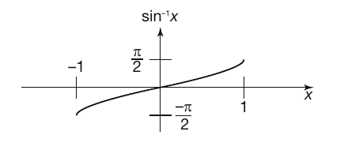
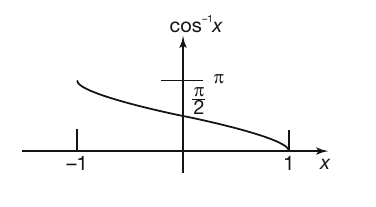
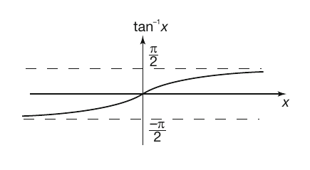
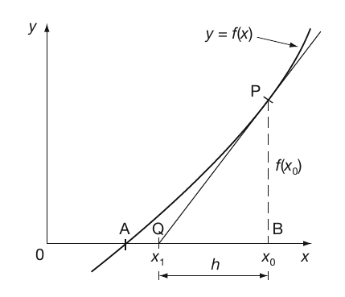
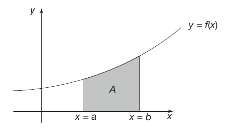
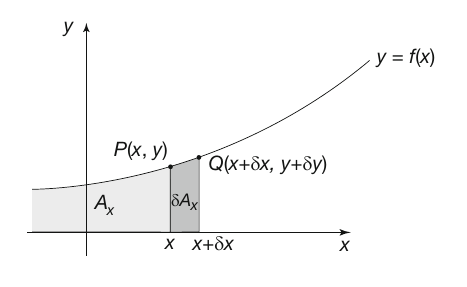
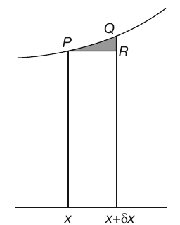
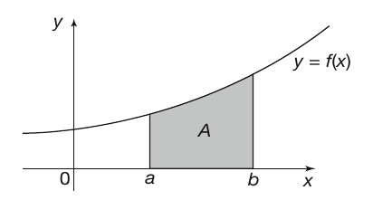
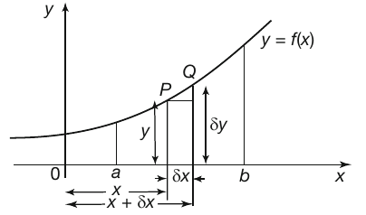
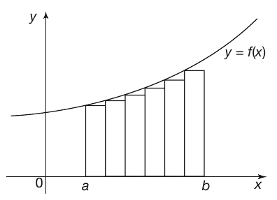

Factors and prime numbers
- A pair of whole numbers are called factors of their product. [19]
- If a whole number only has one and itself as factors it is called a prime number. [21]
- Every whole number can be written as a product of its prime factors, some of which may be repeated. [21]
- The highest common factor (HCF) is the highest factor that two whole numbers have in common. [23]
- The lowest common multiple (LCM) is the lowest whole number that two whole numbers will divide into a whole number of times. [23]
Polynomials
- A polynomial in x is an expression involving powers of x, normally
arranged in descending or ascending order. The degree of the polynomial is given
by the highest power of x occurring in the expression. Polynomials can be
efficiently evaluated by method known as nesting. [25]
- Remainder theorem [31]: If a polynomial $f(x)$ is divided by $(x-a)$,
the quotient will be a polynomial $g(x)$ of one degree less than that of $f(x)$,
together with a remainder R such that $R=f(a)$:
$$
\begin{align*}
\frac{f(x)}{x-a} &= g(x)+\frac{R}{x-a} \\
f(x) &= (x-a)\cdot{g(x)}+R
\end{align*}
$$
When $x=a$:
$$
\begin{align*}
f(a) &= (a-a)\cdot{g(a)}+R \\
f(a) &= 0\cdot{g(a)}+R \\
f(a) &= R
\end{align*}
$$
- Factor theorem [34]: If $f(x)$ is a polynomial and substituting $x=a$ gives a remainder of zero,
i.e. $f(a)=0$, then $(x-a)$ is a factor of $f(x)$.
Partial fractions
- An irreducible quadratic factor in the denominator of the original rational expression of
the form $(ax^2+bx+c)$ gives rise to a partial fraction with a linear expression in the
numerator [25]:
$$
\begin{align*}
&e.g.:\\
&\frac{15x^2-x2+2}{(x-5)(3x^2+4x-2)}=\frac{A}{x-5}+\frac{Bx+C}{3x^2+4x-2}
\end{align*}
$$
- Repeated factors of the form $(ax+b)^2$, the partial fraction breakdown
gives rise to a partial fraction of the form
$$\frac{A}{ax+b}+\frac{B}{(ax+b)^2}.$$
Similarly $(ax+b)^3$ gives rise to partial fractions of the form
$$\frac{A}{ax+b}+\frac{B}{(ax+b)^2}+\frac{C}{(ax+b)^3}.$$
Trigonometric
- The inverse trigonometric functions have restricted ranges. [23]



Odd and even functions
- If $f(-x)=f(x)$ then $f$ is called an even function and if $f(-x)=-f(x)$
then $f$ is called an odd function. [45]
- If $f_e(x)=\frac{f(x)+f(-x)}{2}$ can be defined it is called the even part of $f(x)$
and if $f_o(x)=\frac{f(x)-f(-x)}{2}$ can be defined it is called the odd part of $f(x)$. [46]
Differentiation
- Newton–Raphson method [49]:
If $x=x_0$ is an approximate solution to the equation $f(x)=0$ then
$x_1=x_0-\frac{f(x_0)}{f'(x_0)}$ gives a more accurate value, where
$f'(x_0)$ is the derivative of $f(x)$ at $x=x_0$. This defines an
iterative procedure $x_{n+1}=x_n-\frac{f(x_n)}{f'(x_n)}$ for $n\geq{0}$
to find progressively more accurate values.

From the diagram, $\frac{PB}{QB}=\left[\frac{dy}{dx}\right]_P$
i.e. the value of the derivative of $y$ at the point $P$, where $x=x_0$.
To find $QB$ we see that
$$\frac{PB}{QB}=f'(x_0)\quad\text{and}\quad{PB}=f(x_0)$$
$$QB=\frac{PB}{f'(x_0)}=\frac{f(x_0)}{f'(x_0)}=h$$
$$x_1=x_0-h=x_0-\frac{f(x_0)}{f'(x_0)}.$$
Integration
- Areas under curve [26]:
Consider the area $A$ of the figure bounded by the curve $y=f(x)$,
the $x$-axis and the two vertical lines through $x=a$ and $x=b$ (where $b > a$).

To evaluate the area $A$ you need to consider the total area between the same
curve and the $x$-axis from the left up to some arbitrary point $P$ on the curve with
coordinates $(x, y)$ which we shall denote by $A_x$.

Area $\delta{A_x}$ is the area enclosed by the strip under the arc $PQ$ where $Q$ has the
coordinates $(x+\delta{x}, y+\delta{y})$. If the strip is approximated by a rectangle of
height $y$ and width $\delta{x}$ then $\delta{A_x}\simeq{y\cdot\delta{x}}$. This means that:
$$\frac{\delta{A_x}}{\delta{x}}\simeq{y}$$
The error in this approximation is given by the area of $PQR$ in the figure to the right,
where the strip has been magnified.

If the width of the strip is reduced then the error is accordingly reduced.
Also, if $\delta{x}\rightarrow{0}$ then $\delta{A_x}\rightarrow{0}$ and:
$$\frac{\delta{A_x}}{\delta{x}}\rightarrow\frac{dA_x}{dx}\quad\text{so that, in the limit,}\quad\frac{dA_x}{dx}=y$$
Consequently, because integration is the reverse process of differentiation it is seen that:
$$A_x=\int{ydx}$$
The total area between the curve and the $x$-axis up to the point $P$ is given by the indefinite integral.
if $x=b$ then $A_b=\int_{(x=b)}{ydx}$ (the value of the integral and hence the area up to $b$) and
if $x=a$ then $A_a=\int_{(x=a)}{ydx}$ (the value of the integral and hence the area up to $a$).
Because $b>a$, the difference in these two areas $A_b-A_a$ gives the required area $A$. That is:
$$A=\int_{(x=b)}{ydx}-\int_{(x=a)}{ydx}\quad\text{which is written}\quad A=\int_a^b{ydx}$$
- Integration as a summation [33]:
We have already seen that the area $A$ under a curve $y=f(x)$ between $x=a$ and $x=b$ is
given by the definite integral:
$$A=\int_a^b{ydx}$$

Let’s look at this area a little more closely:

Let $P$ be the point $(x, y)$ on the curve and $Q$ a similar point $(x+\delta{x}, y+\delta{y})$.
The approximate area $\delta{A}$ of the strip under the arc $PQ$ is given by
$$\delta{A}=y\cdot\delta{x}$$
As we have indicated earlier, the error in the approximation is the area above the rectangle.
If we divide the whole figure between $x=a$ and $x=b$ into a number of such strips,
the total area is approximately the sum of the areas of all rectangles $y\cdot\delta{x}$.
I.e. $A\simeq$ the sum of all rectangles $y\cdot\delta{x}$ between $x=a$ and $x=b$. This can be written:
$$A\simeq{\sum_{x=a}^{x=b}y\cdot\delta{x}}$$
If we make the strips narrower, there will be more of them to cover the whole figure,
but the total error in the approximation diminishes.

If we continue the process, we arrive at an infinite number of minutely narrow rectangles,
each with an area too small to exist alone.
Then, in the limit as $\delta{x}\rightarrow{0}$, $A=\lim_{\delta{x}\rightarrow{0}}\sum_{x=a}^{x=b}y\cdot\delta{x}$.
But we already know that $A=\int_a^b{ydx}$, then:
$$A=\lim_{\delta{x}\rightarrow{0}}\sum_{x=a}^{x=b}y\cdot\delta{x}=\int_a^b{ydx}.$$